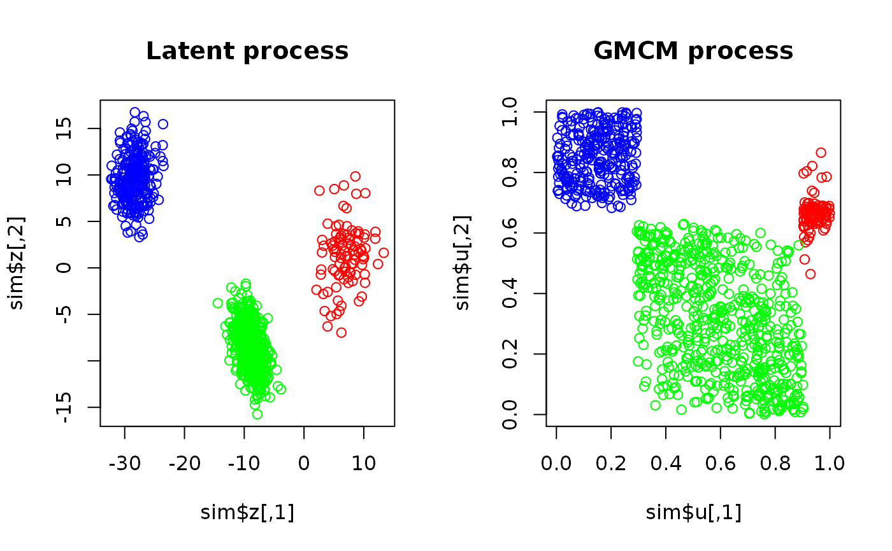
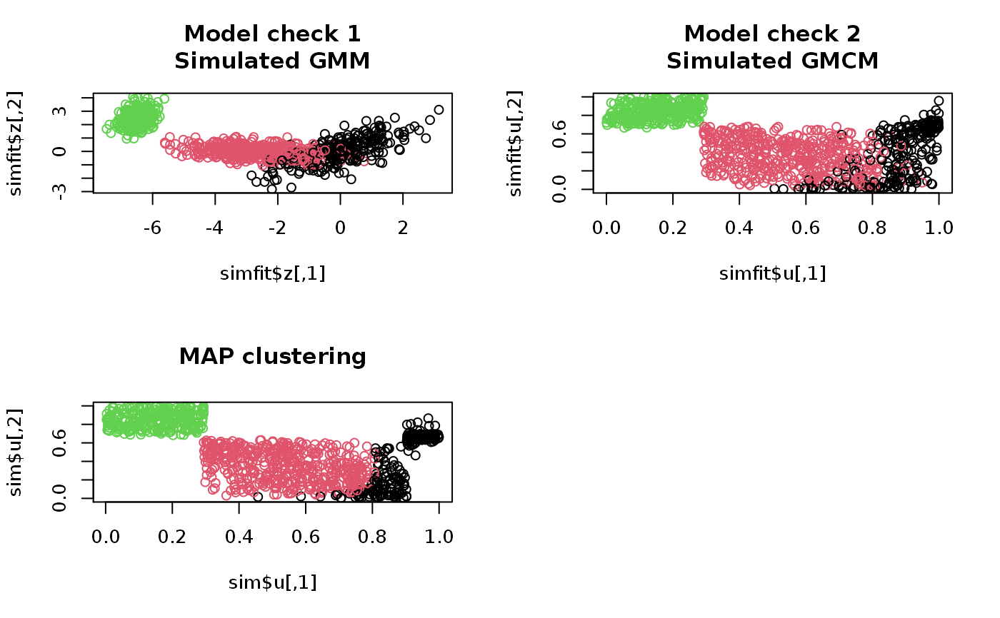

Estimates the parameters of general Gaussian mixture copula models (GMCM). The function finds the maximum likelihood estimate of a general GMCM with various optimization procedures. Note, all but the PEM methods provides the maximum likelihood estimate.
fit.full.GMCM(u, m, theta = choose.theta(u, m), method = c("NM", "SANN", "L-BFGS", "L-BFGS-B", "PEM"), max.ite = 1000, verbose = TRUE, ...) fit.general.GMCM(u, m, theta = choose.theta(u, m), method = c("NM", "SANN", "L-BFGS", "L-BFGS-B", "PEM"), max.ite = 1000, verbose = TRUE, ...)
| u | An |
|---|---|
| m | The number of components to be fitted. |
| theta | A list of parameters as defined in |
| method | A character vector of length \(1\). The optimization
method used. Should be either |
| max.ite | The maximum number of iterations. If the |
| verbose | Logical. If |
| ... | Arguments passed to the |
A list of parameters formatted as described in rtheta.
When method equals "PEM", a list of extra information
(log-likelihood trace, the matrix of group probabilities, theta trace) is
added as an attribute called "extra".
The "L-BFGS-B" method does not perform a transformation of
the parameters and uses box constraints as implemented in optim.
Note that the many parameter configurations are poorly estimable or
directly unidentifiable.
fit.general.GMCM is simply an alias of fit.full.gmcm.
All the optimization procedures are strongly dependent on the initial values and other parameters (such as the cooling scheme for method SANN). Therefore it is advisable to apply multiple different initial parameters (and optimization routines) and select the best fit.
The choose.theta itself chooses random a initialization.
Hence, the output when theta is not directly supplied can vary.
See optim for further details.
Li, Q., Brown, J. B. J. B., Huang, H., & Bickel, P. J. (2011). Measuring reproducibility of high-throughput experiments. The Annals of Applied Statistics, 5(3), 1752-1779. doi:10.1214/11-AOAS466
Tewari, A., Giering, M. J., & Raghunathan, A. (2011). Parametric Characterization of Multimodal Distributions with Non-gaussian Modes. 2011 IEEE 11th International Conference on Data Mining Workshops, 286-292. doi:10.1109/ICDMW.2011.135
set.seed(17) sim <- SimulateGMCMData(n = 1000, m = 3, d = 2) # Plotting simulated data par(mfrow = c(1,2)) plot(sim$z, col = rainbow(3)[sim$K], main = "Latent process") plot(sim$u, col = rainbow(3)[sim$K], main = "GMCM process")# Observed data uhat <- Uhat(sim$u) # The model should be fitted multiple times using different starting estimates start.theta <- choose.theta(uhat, m = 3) # Random starting estimate res <- fit.full.GMCM(u = uhat, theta = start.theta, method = "NM", max.ite = 3000, reltol = 1e-2, trace = TRUE) # Note, 1e-2 is too big#> Nelder-Mead direct search function minimizer #> function value for initial parameters = -545.989357 #> Scaled convergence tolerance is 5.45999 #> Stepsize computed as 0.622874 #> BUILD 15 -181.364917 -607.913043 #> HI-REDUCTION 17 -290.414492 -607.913043 #> LO-REDUCTION 19 -381.286753 -607.913043 #> LO-REDUCTION 21 -416.339626 -607.913043 #> LO-REDUCTION 23 -443.287997 -607.913043 #> LO-REDUCTION 25 -452.988730 -607.913043 #> LO-REDUCTION 27 -473.876690 -607.913043 #> HI-REDUCTION 29 -478.668822 -607.913043 #> LO-REDUCTION 31 -488.164776 -607.913043 #> LO-REDUCTION 33 -493.779249 -607.913043 #> LO-REDUCTION 35 -497.273411 -607.913043 #> EXTENSION 37 -506.928050 -637.031759 #> LO-REDUCTION 39 -512.824130 -637.031759 #> LO-REDUCTION 41 -540.798755 -637.031759 #> LO-REDUCTION 43 -545.989357 -637.031759 #> EXTENSION 45 -546.904877 -656.778752 #> LO-REDUCTION 47 -554.999391 -656.778752 #> LO-REDUCTION 49 -556.873829 -656.778752 #> LO-REDUCTION 51 -557.207070 -656.778752 #> LO-REDUCTION 53 -560.222614 -656.778752 #> LO-REDUCTION 55 -563.146559 -656.778752 #> LO-REDUCTION 57 -568.809552 -656.778752 #> LO-REDUCTION 59 -568.822527 -656.778752 #> LO-REDUCTION 61 -575.304346 -657.595173 #> REFLECTION 63 -607.913043 -668.890671 #> LO-REDUCTION 65 -612.881381 -668.890671 #> LO-REDUCTION 67 -616.920288 -668.890671 #> LO-REDUCTION 69 -623.616514 -668.890671 #> LO-REDUCTION 71 -625.542742 -668.890671 #> REFLECTION 73 -627.715548 -672.386340 #> LO-REDUCTION 75 -632.063552 -672.386340 #> LO-REDUCTION 77 -635.169773 -672.386340 #> REFLECTION 79 -637.031759 -673.621224 #> LO-REDUCTION 81 -638.663225 -673.621224 #> REFLECTION 83 -640.500103 -673.697419 #> LO-REDUCTION 85 -645.060565 -673.697419 #> HI-REDUCTION 87 -652.511509 -673.697419 #> REFLECTION 89 -656.404679 -676.802339 #> LO-REDUCTION 91 -656.436660 -676.802339 #> LO-REDUCTION 93 -656.778752 -676.802339 #> LO-REDUCTION 95 -657.595173 -676.802339 #> LO-REDUCTION 97 -659.660819 -676.802339 #> LO-REDUCTION 99 -660.496546 -676.802339 #> HI-REDUCTION 101 -661.984331 -676.802339 #> HI-REDUCTION 103 -665.156366 -676.802339 #> EXTENSION 105 -667.767870 -684.291294 #> LO-REDUCTION 107 -668.620458 -684.291294 #> HI-REDUCTION 109 -668.890671 -684.291294 #> LO-REDUCTION 111 -671.932296 -684.291294 #> LO-REDUCTION 113 -671.954567 -684.291294 #> LO-REDUCTION 115 -672.386340 -684.291294 #> LO-REDUCTION 117 -673.621224 -684.291294 #> LO-REDUCTION 119 -673.697419 -684.291294 #> LO-REDUCTION 121 -674.174319 -684.291294 #> LO-REDUCTION 123 -674.973471 -684.291294 #> LO-REDUCTION 125 -675.998553 -684.291294 #> LO-REDUCTION 127 -676.128724 -684.291294 #> EXTENSION 129 -676.519877 -686.571474 #> LO-REDUCTION 131 -676.520928 -686.571474 #> LO-REDUCTION 133 -676.802339 -686.571474 #> REFLECTION 135 -677.412806 -687.371632 #> LO-REDUCTION 137 -678.362967 -687.371632 #> LO-REDUCTION 139 -678.883261 -687.371632 #> EXTENSION 141 -679.465947 -691.973270 #> LO-REDUCTION 143 -679.504612 -691.973270 #> LO-REDUCTION 145 -680.614256 -691.973270 #> EXTENSION 147 -680.914675 -694.673666 #> EXTENSION 149 -681.813032 -699.831936 #> LO-REDUCTION 151 -683.710055 -699.831936 #> LO-REDUCTION 153 -683.927285 -699.831936 #> LO-REDUCTION 155 -683.991374 -699.831936 #> LO-REDUCTION 157 -684.193487 -699.831936 #> LO-REDUCTION 159 -684.291294 -699.831936 #> LO-REDUCTION 161 -686.036691 -699.831936 #> EXTENSION 163 -686.136179 -702.916072 #> LO-REDUCTION 165 -686.571474 -702.916072 #> LO-REDUCTION 167 -687.037323 -702.916072 #> EXTENSION 169 -687.371632 -710.072718 #> LO-REDUCTION 171 -690.086754 -710.072718 #> LO-REDUCTION 173 -691.282247 -710.072718 #> LO-REDUCTION 175 -691.973270 -710.072718 #> LO-REDUCTION 177 -692.700564 -710.072718 #> LO-REDUCTION 179 -694.673666 -710.072718 #> LO-REDUCTION 181 -695.223208 -710.072718 #> LO-REDUCTION 183 -695.824834 -710.072718 #> LO-REDUCTION 185 -695.943653 -710.072718 #> EXTENSION 187 -696.305622 -710.735228 #> HI-REDUCTION 189 -697.608363 -710.735228 #> LO-REDUCTION 191 -698.479768 -710.735228 #> LO-REDUCTION 193 -699.831936 -710.735228 #> LO-REDUCTION 195 -700.454431 -710.735228 #> REFLECTION 197 -702.028381 -711.106772 #> LO-REDUCTION 199 -702.214078 -711.106772 #> EXTENSION 201 -702.504380 -713.481754 #> REFLECTION 203 -702.893339 -713.908167 #> LO-REDUCTION 205 -702.916072 -713.908167 #> EXTENSION 207 -705.647560 -721.285516 #> LO-REDUCTION 209 -706.286356 -721.285516 #> LO-REDUCTION 211 -707.503505 -721.285516 #> LO-REDUCTION 213 -708.393078 -721.285516 #> LO-REDUCTION 215 -708.465580 -721.285516 #> LO-REDUCTION 217 -708.513191 -721.285516 #> HI-REDUCTION 219 -709.097685 -721.285516 #> LO-REDUCTION 221 -709.543836 -721.285516 #> LO-REDUCTION 223 -710.072718 -721.285516 #> LO-REDUCTION 225 -710.735228 -721.285516 #> LO-REDUCTION 227 -711.106772 -721.285516 #> EXTENSION 229 -711.220997 -721.500131 #> EXTENSION 231 -713.200793 -727.220534 #> LO-REDUCTION 233 -713.481754 -727.220534 #> LO-REDUCTION 235 -713.908167 -727.220534 #> LO-REDUCTION 237 -714.522440 -727.220534 #> LO-REDUCTION 239 -716.005669 -727.220534 #> LO-REDUCTION 241 -716.469917 -727.220534 #> LO-REDUCTION 243 -717.046978 -727.220534 #> LO-REDUCTION 245 -717.144789 -727.220534 #> LO-REDUCTION 247 -717.768371 -727.220534 #> LO-REDUCTION 249 -719.541861 -727.220534 #> LO-REDUCTION 251 -720.028782 -727.220534 #> LO-REDUCTION 253 -720.156059 -727.220534 #> LO-REDUCTION 255 -720.708474 -727.220534 #> EXTENSION 257 -721.285516 -728.985618 #> LO-REDUCTION 259 -721.500131 -728.985618 #> LO-REDUCTION 261 -721.666801 -728.985618 #> LO-REDUCTION 263 -721.926602 -728.985618 #> EXTENSION 265 -723.589752 -732.828018 #> LO-REDUCTION 267 -724.204066 -732.828018 #> LO-REDUCTION 269 -725.226211 -732.828018 #> LO-REDUCTION 271 -725.235945 -732.828018 #> LO-REDUCTION 273 -725.416924 -732.828018 #> LO-REDUCTION 275 -725.974702 -732.828018 #> LO-REDUCTION 277 -726.114174 -732.828018 #> LO-REDUCTION 279 -726.903048 -732.828018 #> LO-REDUCTION 281 -726.911094 -732.828018 #> LO-REDUCTION 283 -727.220534 -732.828018 #> LO-REDUCTION 285 -727.242634 -732.828018 #> Exiting from Nelder Mead minimizer #> 287 function evaluations used# Confusion matrix Khat <- apply(get.prob(uhat, theta = res), 1, which.max) table("Khat" = Khat, "K" = sim$K) # Note, some components have been swapped#> K #> Khat 1 2 3 #> 1 97 121 0 #> 2 0 489 0 #> 3 0 0 293# Simulation from GMCM with the fitted parameters simfit <- SimulateGMCMData(n = 1000, theta = res) # As seen, the underlying latent process is hard to estimate. # The clustering, however, is very good. par(mfrow = c(2,2)) plot(simfit$z, col = simfit$K, main = "Model check 1\nSimulated GMM") plot(simfit$u, col = simfit$K, main = "Model check 2\nSimulated GMCM") plot(sim$u, col = Khat, main = "MAP clustering")